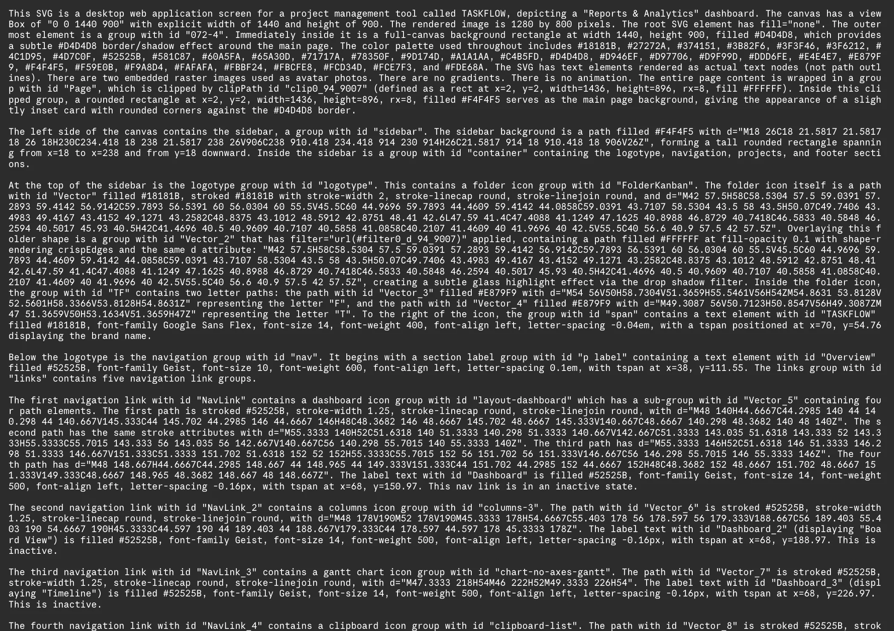
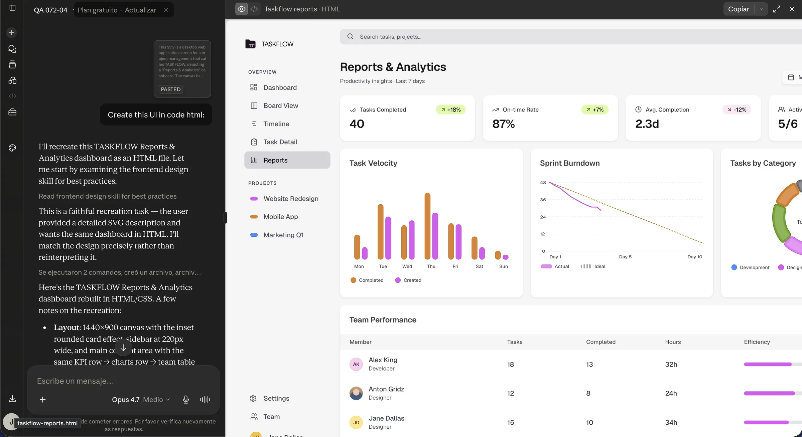

Prompt Design for TasteMakers/Anthropic
Design prompt engineering for Anthropic's TasteMakers. I translate UI structures into structured prompts so AI models can rebuild layouts accurately. It's an ongoing R&D engagement.
 Now
Nowactive
The project
TasteMakers is exploring how AI models can reconstruct UI layouts from structured visual specifications. Working with Anthropic's Claude, the brief is to turn arbitrary user interfaces into prompts so machines can rebuild them accurately, keeping spatial intent, hierarchy and motion semantics.
Designers think in visuals and the models only receive text, so describing how something looks falls short. The prompt also has to carry the rules that hold a layout together: proportions, alignment, motion timing and accessibility constraints.
What I do
The work has three parts: analyzing existing UIs for structural patterns, defining a vocabulary that maps visual decisions to prompt fragments, and testing reconstruction fidelity with various models.
Day to day, I write structured prompts that capture layout semantics (grid relationships, motion specs, interaction states) and then iterate on whatever differs between the intent and the output. Motion specs get extra attention because they're the hardest to put into words without losing detail.

Structured spec: the prompt input
Reconstructed UI: the model outputStatus
The engagement is active. Early findings: pure visual descriptions ("a card with rounded corners and a subtle shadow") produce inconsistent results. Structural prompts that encode rules and tokens produce much more reliable reconstructions.
Since August 2026 I work as an LLM Trainer and Visual Design Evaluator. I review AI-generated visual and UI designs against reference material (alignment, typography, spacing, color, illustration quality) and give structured comparative feedback for model training.
More projects.
Previous and next in the order of the home page.